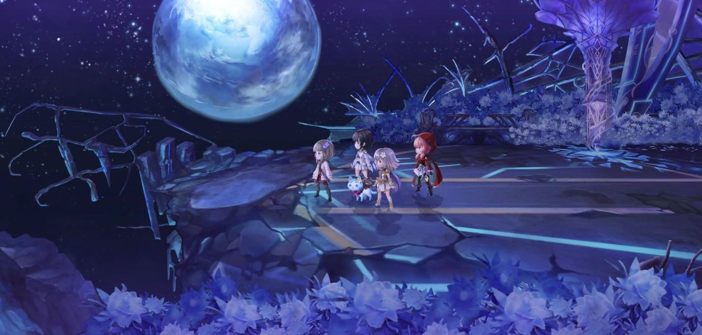

アナザーエデン関連ページ・サイトマップへ戻る
アナザーエデン：feinが書いたレポート集
ここにあるのは、今までアナザーエデンをプレイしてきた中でわたくし「fein.den scoth mn」が書いてきたPDFレポートです。
古いものも多数ありますが、これらはいわば「feinのアナデン戦闘史」となります。
今のアナデンには星導覚醒（★6キャラ）が実装されており、昔のアナデンとガチャの性質が全く違います。
ここに書いてあるのは星導覚醒実装前の話ですから、あくまでも思い出話＆古い時代の攻略観と認識してください。
無償石をアナダンで使う意味とコピペとの関係

右側に並んでいる４枚のコピペ画像は、私が全ての素体キャラを揃えた2023年7月2日時点でのコピペの天冥値を表しています。
そして2023年10月3日、本気の石割り周回で全キャラコンプリート達成しました😆ww
結論から言ってしまうと、無償クロノス石を夢見に注いでしまうのは損だと、私は思っていました。
ちょうど開眼ガリユ編くらい…からですかね？
なぜかというと、コピペの天冥値が高確率で上がるからですよ。
でもアナザーダンジョンで無償クロノス石を使っていれば、★５の配布キャラの天冥値が上がっていきます。
仮に配布キャラがインフレに取り残されている性能であったとしても、コピペの天冥値よりよっぽどマシだよね。
この話は昔からいろんな人が言ってましたよ？
無償10連で★５が１名、★４が４名、コピペが５名のケースを考える

見出しにあるような引きなんてそうそうないけどね。
そもそも★５が当たること自体が少ないでしょう。
無償でも確定する夢見なんか、生放送後の特別なものくらいです。
この見出しにあるような引きについて、考えてみます。
無償10連は1000クロノス石が必要です。単純に内訳を考えると…
- 100クロノス石で★５が１名。天冥16プラス。お目当てのキャラだったでしょうか？
- 400クロノス石で★４が４名。それぞれのキャラに天冥４ずつプラス。すでにASやESが出ているなど、強いキャラだったでしょうか？
- 500クロノス石でコピペが５名。それぞれのコピペに天冥１ずつプラス。そのコピペ、どこで使うの？
- かなりマシな引きができた無償10連ですが、このような内訳となります。
10連でも単発でもコピペは出る

これは良いんじゃないかな？
どの夢見のラインナップを見てもコピペはいるのですよ。
10連なら★４が１名は確定するけど、コピペは出ます。
100石で単発夢見してコピペの天冥値が１プラス。
これは使い道がないよね。
普通に考えて、単発一撃でお目当ての★５が当たるなんて…そんなの連続で起きるわけがない。
アナザーダンジョンならコピペの天冥値は上がらない

当たり前ですよね😆ww
そりゃあそうだよ。
アナダンでコピペの天冥値が上がるわけがない。
配布キャラの天冥値が上がります。
使いどころのないコピペと、インフレから置いていかれているとは言え★５の配布キャラ。
どちらの天冥値を上げたいと思いますか？
私なら圧倒的に配布キャラの天冥値を上げたいよ。
それなのに、無償10連だとコピペの天冥値が上がることが多いのです。
これは昔からそうですよね。
開眼ガリユを私がループ攻略で撃破した当時から、いや…もっと遥か昔から。
コピペの天冥値を上げるより配布キャラの天冥値を上げたい
まとめると、次のように私は昔から考えておりました。
- 無償クロノス石で夢見をすると、コピペに注がれる石が発生してしまう。
- コピペに注がれる100石があるなら、それで配布キャラの天冥値を１上げられる。これはコピペの天冥値より遥かに価値がある。
だから、私は無償クロノス石で夢見をしてこなかったのです。─ 有償でも可能な限り避けてたけど ─
コピペに注がれる石が無駄としか思えなかったのですよ。
アナザーダンジョンだと最新の夢見キャラは当たりませんが、配布キャラの天冥値が上がり、ASやES、異時層キャラの書を期待できるのです。
周回は…ちょっと大変だけどねー😅💦
異境についてのレポート全集
こうやって、徐々に整理していきます。
いずれ、このページが大きなサイトマップになるでしょう。
異境についてのレポート全集
アナザーエデン：ファンサイト制作RTA
どうしましょうかね…
古いPDF、特にアナデンと関連が深いものについては、個人サイト制作関連ページに入れるより、fein's portalを稼働させた記録として残した方が良いと思ってる。
アナザーエデン：ファンサイト制作RTA
グラスタ表を生んだテユールメナス
グラスタ表を生んだテユールメナス

まぁ…事実上、アナザーエデンの戦闘史を変えた敵キャラと言って差し支えないかと。
この敵が登場した時に発生した炎上沙汰をきっかけにグラスタ表が生まれ、そのグラスタ表によって、「強敵戦→勝てないTweet→炎上」という流れが収まりました。
それもそのはず。
「ガチャ＋ゲームのテクニック」という意識ではなく、「グラスタ集めが足りていないのか…」という意識になるからですよ。
全員が全員でないにしても、グラスタなしでは火力は出ないという認識を広めることができたってことです。
グラスタ表そのものは大したコンテンツでもないんですよね。
グラスタ表そのものが大切というより、アナザーエデンにはグラスタというものがあるのだという意識が広く知れ渡ったことが、極めて重要だったのだと解釈しています。
ループ攻略集大成：星５フィーネと八妖
ループ攻略集大成：星５フィーネと八妖
八妖と16妖はひとまとめにしましょうか。
現代八妖に関してはレポートを書いていないのです。
当時はまだPDFという形で焼き込んではいなかったんだよね。
少しずつ、このレポートコーナーも形になりつつあります。
火力攻略集大成：ASサキによる「豪炎猛火廻生」の完全制圧
火力攻略集大成：ASサキによる「豪炎猛火廻生」の完全制圧
いよいよページが増えてきましたね。
ここまでは大昔からあった私の構想通りです。
どちらにしても、最終的には自分でイチからプラットフォームを作っていくつもりだったから。
いずれこのレポートページも、大きなサイトマップに成長していくでしょう。
2020年賀状.pdf
2021年賀状.pdf
2022年賀状.pdf
攻略サイトにある最強キャラは揃えるべきか
20230424tier表.pdf
このPDFは私がおもしろ半分に作ったtier表です。最強キャラリストみたいな。
この表を真に受けてはいけませんよ？
これを書いたのは2023年4月の話ですし、そもそも当時の私は全キャラ持っていなかったのですから。
限界突破（アナデンの言葉だと天冥255）へ到達しているかどうかでも違いますしね。
キャラランキングなんて、いわば「優しい嘘」でしょ。
君が引けたキャラは最強だ！
そんな強いキャラが引けた君こそ全コンテンツ制覇できるぜ！
Sランクが３人もいるなんて、君は引き強だなぁ！
こういった言葉たちは、それだけで人のモチベーションを上げることができるでしょう。それはそれで良いと思いますよ？
ただ、実際はそうではないんだけどね…
グラスタがなければ、SキャラでもAキャラでも火力は出ません。
グラスタを持たない最強キャラは、最強でも何でもありません。
そしてリセマラでSSキャラを10人引こうとも、グラスタが集まる頃にはインフレの影響でそれらのキャラたちはAランクへ落ちている可能性があります。─ いや、落ちている可能性が高いと言うべきか ─
これは、tier表・星夢お勧めリスト・最強キャラランキングなどなど…およそガチャキャラのお勧め表みたいなタイプのもの全てについて言えることです。
上記でお話してきたグラスタ集めというのは、早くて半年、長くて１年はかかると思っていただければ良いでしょう。
よって「アナザーエデンにリセマラは不要」という言葉は、正しいと言えます。
20230611newキャラ.pdf
20230611アナデンガチャ.pdf
20231011grasta.pdf
20231014grasta.pdf
20231026バッジ一覧.pdf
20231218バッジ一覧.pdf
2023年7月9日素体コンプ時コピペ天冥.pdf
2023年賀状.pdf
2024年賀状.pdf
Webサイトを作ってみる.pdf
_fein歴史vol1.pdf
_fein歴史vol2.pdf
おさかな３匹.pdf
お焚き上げ：VCグラスタ.pdf
からくり侍呂心.pdf
Another-eden_s-design-for-Fine(fourth-edition)：最終更新＝20180902.pdf
ASfein）料理.pdf
ASfein）釣り.pdf
ASfein）魚の保存.pdf
ASマリエル蘇生.pdf
EPS-014 LeBlanc
このミミズはめちゃくちゃ大騒ぎになっていましたね。
ちょうどテユールメナスをきっかけに、SNSでゲーム話をするコツについてWebページを作っていた頃だったかと。
EPSシリーズは、そのコツが実際に有効かどうかテストをしていた時期なんです。
EPS-014LeBlanc.pdf
これもEPS-209 Murphyと同じでどうしてもASミストレアを使ったレポートにしたかったんですよね。
ものすごく気に入ってさ。
すでに冥255にしていますが、ちょっと前までは大活躍してくれていました。
当時は星夢でASミストレアを狙っても良いんじゃないかと考えていましたね。
どっちみち最新コンテンツをやりたいならグラスタを集めないとどうにもなりません。
それまではASミストレアに全部なぎ倒してもらえば良いということで。
もちろんグラスタが集まった後もASミストレアの活躍はすごいけどね。
まぁそんなこんなも、星導覚醒が実装されたことで全てリセットされたわけで。
Web開発者として、本格的にサイトを作り込んでいく時が来たのだということです。
EPS-209 Murphy
EPSシリーズはASミストレアの性能チェックをレポートネタに選びました。
50%も腕力と知性をデバフできるのは、当時としては大きかったのですよ。
少し時間はかかりましたが、他のパーティーネタよりぜんぜん快適に倒せました。
EPS-209Murphy.pdf
もうこれはミストレアを編成するために組んだパーティーだったのです。
とにかくミストレアを使ったレポートにしたかった。
それだけですね。
このEPS-209 Murphyの特徴としては全部耐性になっている部分があると思うけど、ちゃんとグラスタを揃えておけば、敵を倒すのに十分な火力はちゃんと出ます。
まずは「火力」ではないんですよね。
まずは「グラスタ集め」なんです。
グラスタを持っていなければ、どう頑張っても火力は出ません。
EPS-227 Patel
この豚ちゃんは何だったかなー…確か、ギミック都合で連撃が有効だったと思います。
でもそんな強くないよ。余裕でASミストレアを入れたお好み編成で倒せました。
EPS-227 Patel.pdf
最強キャラがすぐに使えなくなる戦闘？！
詳しくは覚えていないのですが、水吸収だったかな？
それとも魔法吸収だったっけ？
なんかそんな感じの事情でフラムラピスが使えない戦闘だったんですよ。たしか。
それですごく文句を言われていた記憶があります。
他には状態異常無効を貫通してくるとかで、ソシャゲだソシャゲだーと散々言われていたような記憶が…なんとなくあります。
私は当時フラムラピスとか、もしくは最新アタッカーがいつも通り不在だったので、昔ながらのアナデン古武術で倒したけど。
でもまぁ…アタッカーがすぐに使えなくなるのは仕方ないのかもね。それがインフレです。知らんけど（笑）
EPS-245 Quadxin
アナザーエデンに登場する強敵の中で、もっとも再戦を避けられる敵ではないでしょうか？
ストーリーがね…。
少なくとも私は再戦する気にはなれないです。
EPS-245 Quadxin.pdf
プレイスタイルを曲げ、敵に何もさせず撃破
私が「敵になにもさせない」タイプの火力速攻戦闘を好まなかった理由は、次のとおりです。
- ガチャ運がないから、アタッカーインフレに付いていけない。（今でこそ言えるけど、これは建前です。SNSではこういうの大切だよ？）
- 敵とドンパチやってるのが楽しい。
- 最近は見ないけど、昔からこの手の話で何度も何度もTwitter上で言い合いになってるのを見てるから、しつこいと感じて嫌気が差してました。
- そして何より、コピペへ天冥が捨てられるのが嫌だったんだよね。あれにクロノス石を注入しても意味がないでしょ？
こんな感じかな？
はぁ…どなたか、私に火力速攻のモチベを出させてくれる言い方をしてくれる御仁はいないものかしらね？ ─
なんてこと言っている間に、星導覚醒が実装されましたけど。それから先は場の雰囲気に併せつつ、ひたすらWeb開発にのめり込んでいました。
─
さて、冗談はさておき、このEPS-245 Quadxinだけは本心から例外としました。
やれる限り速攻で倒しました。思いついたパーティーでささっと。
すでに倒した人は分かると思いますが、ストーリーがちょっとね。
嫌いなストーリーじゃないんですよ？
そうではなく、一息にやってしまうのが良いと感じたんだよね。
要は思いっきり感情移入してしまいました…
連続でダウンさせ、最後はそのままアナフォで終わり。
feinは緩和前釣りで箱MAXクリア.pdf
git稼ぎ
git稼ぎ.pdf
ナグシャムのミニゲームで黄金武器というのが入手できるんです。
これを装備していると取得Gitが上昇するのですが、それを使ってGit稼ぎの効率を比較したレポートですね。
ただ、もう2023年7月現在のアナデンでは、黄金塊がドロップするアナザーダンジョンでついで仕事としてGit稼ぎをしていただいた方が良いでしょうね。
grasta.pdf
grasta_20240515.pdf
Insula Ventorum.pdf
Management-note-for-fine(anaden)：最終更新＝20180902.pdf
Master設定３部前編フェイズシフト周回
これは強敵戦ではないんですけどね。周回ネタです。
でもさすがマスター難易度だけあってザコが尋常でないほど強く、一筋縄ではいきませんでしたね。
普通に考えれば難易度を落としたほうがいい。
Master設定３部前編フェイズシフト周回.pdf
マスター難易度へ挑戦するかどうかはともかく、３部まで来てグラスタが抜け漏れだらけというのはリスクが高いと考えます。
運営側も難易度を落としてくれたりするけどね？
完璧じゃなくてもいいし、付け方が上手じゃなくてもいいです。
とりあえず、グラスタをちゃんと持っておきましょう。
そうでないと付け方の練習さえできません。
マスター難易度でフェイズシフトを周回するかどうかは、その後で考えれば良いことでしょうね。
必ずしもキャラが揃っている必要はありません。
Master設定３部前編ボス戦
さすがメインストーリーのマスター難易度だけあって、敵が本気でしたね！
私も久しぶりにストーリーで戦闘を楽しめました。
どの敵も甲乙付けがたい。
普通に強敵戦しちゃってますよ。
Master設定３部前編ボス戦.pdf
敵の攻撃力も高く、動きもトリッキーで対処しにくいんですよね。
初めの馬からしてとても強かった。
メインストーリーのボスなので細かくは語れませんが、もしマスターの難易度へ挑戦するなら、必ずグラスタは揃えましょう。
過去のコンテンツも放置しない。
ここに来るまでにいろんなところを回ってきた前提の難易度ですから、グラスタや装備の抜け漏れがあまり多いと厳しいと思います。
ただ、ちゃんとグラスタ等を整えておけば、ミナルカが不在でも全然大丈夫です。
My-report-for-Fine：最終更新＝20180902.pdf
Raptorロイド・コレット・アルフェン・シオン（動画付き）
テイルズコラボのおまけボスですね。
Raptor Lloyd・Raptor Collett・Raptor Alphen・Raptor Shionneの４体は何とでもなる。
聖樹アスクラピアの影はチェルノボーグでワンパンしました。
レポートはRaptorロボと聖樹をまとめているので、火力撃破のほうは動画を掲載しましょう。
Raptorロボ４体＋聖樹アスクラピア影.pdf
Raptorロボはマイルドな難易度で、そんなに脅威ではないですよ。
ASミストレアとか、ASねここでデバフしちゃえば。
一応相手のバフを解除できるとより安心ですが、グラスタを揃えてあるなら、そんなことせずとも倒し切れる火力が出ます。
聖樹アスクラピアの影・火力撃破
これは古典的な２ターン撃破ものです。
私はチェルノボーグが冥255なので、手っ取り早くそれでざっくりやっちゃいました。
閃撃陣からワンパンするとラクかも。
いずれコレットあたりは天冥上げしたいものですね。
どうだろ、そのあたりにはより凄いキャラが出てるかな？
This is a video on Google Drive.
未来TerraNiViumも短ターンキルは不要だった
TerraNiViumもずいぶん遊びましたねー。
相手がランダム行動で、みーんなZONE VCからの２ターンでやっつけてた。
でも私はまったく違ったルートを選んだんですよね。
TerraNiViumゾーンなし.pdf
そういえば最近（2024年11月現在）、運ゲーなしで強敵を倒すムーブを見なくなりましたね😆ww
一時期の流行みたいなものだったのかな？
私は一人で盛り上がってたけど。
TerraNiViumゾーンなしASサキ.pdf
昔からほんとサキちゃんが大好きだったんですよね。ここでも使ってる。
当時はZONEがあまりにも強くて、とりあえずZONEなしで強敵を倒す型を私は試みてましたね。
今も昔もやってることは変わらないようです。
TerraNiVium星4フィーネ.pdf
★４フィーネでも戦ってましたね！
あれだけインフレしていながらいつまでもフィーネは★５にならず、それも私を徹底的なループ攻略に駆り立てたんですよね。
とにかくガチャを引かずに勝つことが、私にとって絶対の正義だった時代です。
だってフィーネだけ★４のままで、その状態でむやみに投資なんかできないでしょ。
先のことも分からないのに。
Twitter時代のモーメント管理.pdf
開眼アザミ編
もう思いっきり推し推し攻略ですね😆ww
でも私らしくて良い感じです。
アザミ開眼はお勧めです。アナザースタイルの火力が尋常ではないんですよね。
３部のMaster難易度でも大活躍してくれました！
アザミ開眼.pdf
マユとASミストレア、そしてフィーネ
どのキャラも強いよね。
見出しの３キャラはこのアザミ開眼をしていたころに全員天冥255だったような？
ミストレアだけがまだ255になってなかったのかな？
忘れちゃったけど、これほどレポートで褒め称えているのですから、大活躍してくれたんでしょう。
アナザーエデンのお弁当を再現しよう！〜漁師のリスベル〜.pdf
アナザーエデンのシンボル魚、カマス（KMS）をリアルで釣る！.pdf
アナザーフォース.pdf
アナダンでレベリング.pdf
アナダン最果ての地「天冥255」を目指す.pdf
アナデン4周年ご挨拶.pdf
アナデンの主力サポート等.pdf
アナデンの主力地属性.pdf
アナデンの主力水属性.pdf
アナデンの主力火属性.pdf
アナデンの主力風属性.pdf
アナデンカフェ新宿.pdf
アナデンカフェ１.pdf
アナデンカフェ２.pdf
アナデン招待状キャンペーン.pdf
アナデン最推し：フィーネ.pdf
アナデン進捗レポート.pdf
アナデン釣り記念レポート.pdf
アルマエテルナ.pdf
アルマエテルナ配布縛り.pdf
アンケート調査票：作成日＝20191130.pdf
インフィニティフォース.pdf
Lv170までのウクアージ
当時はレポートの書式もこんな感じにしていたんです。
Twitter時代末期の「Introduction」で始まるレポート書式は、無貌レポートから始めたもの。
もともと洋書でよく見るスタイルで、文頭の１文字を大きいフォントにして見やすくするという。
ウクアージ170なんてのもいたよね。
どうやって倒したのか、それこそ自分のレポート読まないと思い出せない…
ウクアージ170.pdf
過去の敵はみんなグラスタでやっつける
これに尽きますよ。
新しい敵もそうですが、古い時代の強敵はみーんなグラスタを集めるだけで勝てます。
tier表のSSキャラなんかいらないし、リセマラもいらないです。
グラスタさえ集まれば、適当な配布キャラにくっつけてアナフォすればみんな吹き飛びます。
HPストッパーから何かされたら初めて考えればいい。
上述のようにグラスタなんですよね。私からのアナデン攻略提示はもうグラスタ集め一徹でも良いくらいだと思ってますよ。
だってそれだけで１年以上はかかるし、あとはどなたでも多少は慣れてくれるでしょうから。
逆にグラスタ持ってないのに砂袋やってもしょーがないですよ。
どっちみち火力は出ません。
グラスタの有無で10倍も20倍も差が出るんですから。
インフレ考察とループ攻略
ウクアージLv170・開幕アナフォ即撃破で見る濃密バフデバフ.pdf
早い話が、２部でグラスタが登場してからは「短ターンキルできる」というのが、ガチャの中心的な付加価値だったのですよ。
それに当時はまだTwitterが正常稼働していたから、Twitterが擬似的な闘技場みたいな雰囲気になって、ユーザー同士で競わせる雰囲気を作り出すことも容易だったよね。ソシャゲ会社にとっては経費をかけずにレース場を設備できてたってこと。
そういう感じだと私は理解していたので、最新キャラに頼らぬ強敵戦攻略、すなわち「ループ攻略」の方が優れているという考え方を変えなかったのです。
今でも基礎の考え方は変わっていませんよ？
手元に残るクロノス石の数字の桁が違うというのは、それだけで価値があると言えます。要はガチャ。そういうことです😊
最後まで倒すとウクアージが仲間入り
ぜひともウクアージを仲間にすることをお勧めします。
さすがアナデンの元強敵代表選手。非常に強いです。
ウクアージもいつか仲間になるんじゃないか…そんな期待はどこかにありましたよね。
少なくとも私はそうだった。
このサイトを作り始めた2023年7月あたりには、すでに冥200を超えています。
普通の強敵戦でもウクアージは大活躍していますよ？
バックサイドに待機させた時の回復がマジで強いんです！
ウクアージLv175〜Lv195.pdf
グラスタをある程度は集めないと苦しいけどね。
途中まではループ攻略で長期戦すればグラスタなしでも何とかなるかもしれませんが、最終戦が厳しいと思います。
ウクアージ最終戦は３匹まとめて相手にしなければならず、耐久戦はあまり現実味がないでしょう。
普通に開幕アナザーフォースで一気に倒してしまったほうが良いです。
その後で武器を集めるために何度も倒さなければならないので。
私はフィーネの火力で最終戦は倒しました。
無属性魔法なら耐性ガチャにほぼ引っかからないため、気楽に武器集めもできましたね。
フィーネを冥255にしておいて良かったです。
フィーネ冥255の火力
これが冥255のフィーネが持つ火力です。
当時でさえこれだったから、今はもっと高いですね。
これとてグラスタによって火力を上げていますよ？
つまり、グラスタをちゃんとすれば、本来なら火力アタッカーでないキャラでも火力が出るようになるんです。
バフの倍率が高過ぎて、もう昔みたいなバランスに戻すのは無理だと思うわ…
このセリフ、笑ってしまいました😆ww
そうですね。
これが、インフレの未来です。
カオスオーガ.pdf
キャラ一覧（配布版）.pdf
ギルバデスアンケート.pdf
天255のASサキに敗れ去ったクダン
クダン.pdf
これは印象に残っているんですよね。
ASミュルスで怨霊をぶっ飛ばして、その後はASサキで氷結した敵です。
あまりにもサキが強くて相手にならなかった。
でも、この当時はちょうど「強敵戦氷河期」だったんですよね。
本当に申し訳ないんだけど…
砂袋ないしは競争誘発要素のために、ガチャするわけにはいかないのよ😆ww
この当時からもうASサキが猛威を奮っているんですよね。
火属性の敵といえばすぐにASサキが飛んできて、速攻で氷結しておしまい。
昔から私の時層はそうでした。
いつかASサキも顕現等で強化されると嬉しいものです。
グラスタさえ耐久方向でした
グラスタさえ耐久方向１.pdf
グラスタさえ耐久方向２.pdf
強敵戦氷河期の間にやってたことの一つです。
大して高い火力は必要なかったのです。だからグラスタも拾った生命グラスタを適当に付けて済ませてましたね。
ちょうどアナダン冥峡界が出る前までくらいかな？
毒ペグラスタも使ってたけど、スクロールして見つからなければそこらへんの火炎の力とかを付けちゃってました。
火力よりも耐久を上げるほうが重要だったのです。なぜって、耐久方向が強化できるキャラがガチャで滅多に出なかったからね。
グラスタ一覧デザイン一新.pdf
コンテンツ・マップ.pdf
コンテンツ消化計画.pdf
サブスク.pdf
ジュスティーヌ＆カロリーヌ
ペルソナ双子と言った方が分かりやすいかも？
無貌と続いて「HPストッパー割り」というテクニックに凝っていた時期ですね。
ジュスティーヌ＆カロリーヌ.pdf
HPストッパー対策
ちょうどアナザーエデンが「強敵戦氷河期」にあった時代のものですね。
大して敵が出てこないのが分かっているのだから、むやみにガチャを回さずに勝つ！
これが最優先であった頃の戦闘です。
もちろんループ攻略（耐久戦）です。
敵側のHPストッパー直後の対応が課題だったんですよ。
その後に火力が出ないと厳しかったんだけど、HPストッパーまで普通の攻撃で済ませて、敵がHPストッパーを迎えたら一気にアナザーフォースで仕留める。
これができれば高い火力を持つキャラをガチャで追うことなく、ちゃんと勝てたんです。
この頃の蓄積が、今の（2023年7月現在）私のアカウントが持つ余裕を作り出したんですよね。
すなわちこの頃のループ攻略が、余裕を持ったクロノス石の蓄積をもたらしたというわけです💯
それはその後のアナデンアカウントの運用面に大きな影響を与え続けています。
スコアタ.pdf
スコアタ計算式.pdf
ソフィ
すでに冥255ノーナで最短ターン攻略したレポートもありますが、あっちの攻略は現実味が薄いでしょうね。
こっちの攻略のほうがいい。
登場当時はかなり騒がれていました。
仕様にクセがあって、敵の攻撃に対処できなければ勝てません。
ソフィ）普通の攻略.pdf
普通に攻略するなら、ZONEを使わずに攻略したほうがやりやすいと思われます。
連撃ができるキャラを使って、手早くアナザーフォースのゲージを貯めながら戦えば安定するかと。
ソフィの攻撃力が高いことはもちろん、眷属も放置できないんですよね。
状態異常がうるさいし、こちらのHPもどんどんデバフされてしまう。
パーティー内で属性を分けることも忘れずに。
ソフィ本体を無視して眷属を攻撃するのです。
でも超火力で破壊してはいけません。
ギミックが発動してソフィが異常に強くなります。
ターンごとに何がどう変わっているかを見続ける.pdf
エクストラスタイルのメリナがお気に入り
テイルズ精霊ESメリナ.pdf
ESメリナの必殺技がすごく気に入ったんですよ。
それでいっぱいレポート書いちゃったという思い出です。
以前はテユールメナスのページに置いてあったんですけどね。
ノーマルスタイルは星導覚醒も出たし。
パーソナリティも強いし、255にされている方はお得かも。
でもこういった諸々の記述も、本当に過去のものになりました。
これがライブサービスゲームの宿命なんですよね。
星導覚醒が出て以来、いろんなキャラがベンチを温めているかと…
デウスクラース.pdf
デバフ耐性グラスタも重要なアイテム
デバフ耐性グラスタ.pdf
これは生命グラスタと支援グラスタの重要性、とりわけループ攻略の中で活用される事例についてまとめたものですね。
敵の動きに対応できない理由は、敵の攻撃でやられてしまうからでしょ？
それを防ぐためにできる限りの工夫を積み重ねれば、最新キャラをガチャで引けなくても勝てるんです。
というお話をしているレポートです。
生命や支援のグラスタはあまり注目されませんが、それの扱い方次第で戦況が一変します。
３部まで出ている2024年11月現在、このレポートの文体は少々古い雰囲気です。
しかし、基礎的なアナデン戦闘の考え方として私が重要視している内容であることは変わりありません。
これでガチャを引かざる得ない状況を回避できるなら、それだけクロノス石を手元に残しておけるということなのです。
このレポートに書いてある考え方は、例えば３部中編の強敵戦にも活かされているのですよ？
ハイエンドコンテンツ.pdf
バッジ一覧.pdf
ヒーラーを称えるレポート.pdf
ファンサイト(1).pdf
ファンサイト.pdf
フィーネ冥140.pdf
プレイスタイル.pdf
ヘブバンレポ1.pdf
強敵キラーのマナ
マナちゃんね…いったいどれほどの強敵を蹂躙してきたのか？
その強烈なバフデバフで、マナが登場した当時の強敵は全て駆逐されたのです。
異境なんか文字通り焦土になってたよね…マナの登場でハイエンドコンテンツの威厳が決定的に損なわれた。

強敵戦だけならまだ良かった。
VCでMP消費減少の能力を持っていて、周回でも猛威を振るい続けたのですよ。
そして配布キャラであったところがまた旋風を巻き起こした。
2024年11月現在になってもなお、アナザーエデンでインフレと言えばマナだと私は思ってます。
最強のインフレをもたらしたキャラだと。
マナのバフデバフ１.pdf
マナのトリッキーなバフデバフ
マナのバフデバフは敵味方全員を巻き込むのです。
だからリスクもあるんだけど、敵の動きに対処する動き方ができるなら強力な武器になります。
プラクティカルの物理耐性アップ＋治癒もほんとうに強かった。
アナデンの戦闘史を塗り替えてしまったキャラですよね。
マナのバフデバフ２.pdf
マナの「子夜のサンドリヨン」
これだよね。このスキルの登場を見たこともループ攻略を続ける動機となりました。
敵の動きに対応するのに必要な能力が、いつ実装されるか？
そして敵の動きに対応するのに必要な能力が実装されるまでは、火力をガチャで出し続けてくるだろうという予測が効くようになったのですよ。
私はソーシャルゲームを経験したことがないのでこの手の話は本来弱いのですが、マナの登場で多少は理解できるようになりました。
すなわち、「敵の動きに対応できないから、できるだけ早く火力で倒すしかない。」
この状況がガチャによるラインナップでどのように続いていくのか。
その推移を見定めていくことが、私のアナザーエデンでは極めて重要だったのです。
マユ255への軌跡.pdf
マリエルレポート.pdf
メビウス.pdf
メビウス効率.pdf
メビウス表.pdf
メビウス説明書.pdf
アナデンバトルの天変地異：マナの配布
メルヴィル・レーヴの話題からですね。
Twitterアカウントの運用に政治的視点が必要だと気付いたのは。
「Twitterアカウントの発言内容」と「実際のアナデンプレイ状況」
これをどこかで切り離す手法を見い出さない限り、落ち着いてプレイできない事象が発生するリスクがあると判断したのです。
メルヴィル・レーヴ.pdf
戦闘としてはマナの配布でしょ🍎
また、このあたりからループ攻略の徹底を本格的に検討し始めたのです。
10000石が配布された時代でもあったから、魚釣り趣味とのバランスを取りつつ、アナザーエデンも続けていくベストな方法を模索したかったんですよね。
アナデン戦闘バランス分析（メルヴィルレーヴポイント）.pdf
いろんなレポートを書きましたねぇ…🖊
ループ攻略の持続的運用にあたって、何を考える必要があるか当時の私がまとめたものだと思われます。
これらの攻略的視点と、Twitterアカウントの政治的運用。
この２つをうまく噛み合わせることができれば…クロノス石を浪費せず、アナデンをソロRPGとして楽しく継続可能なんです。
なんか「政治的」なんて言うとグロテスクに感じられちゃうけど、やってみるとすごく快適なのでお勧めですよ？
職場とかでも良く聞くじゃん。
「あのタイミングで君が○○について発言するのは、政治的に適切じゃないんだよね。だから事前に打ち合わせしよう」とか、そういうアレですよ😆ww
社会人経験があったほうが、この話は伝わりやすいかもね？
メルヴィル・レーヴ累積２回目.pdf
なんでこれパーティー編成を非公開にしてるんだ？
あー…いつも通りネタバレで炎上してたのかな？
昔からの恒例行事で定期的に発生してたんですよ。
たぶん、ネタバレ・イデオロギーの発作があったんでしょう。
マナがいたんじゃないかな。
マユと同じくめちゃくちゃ可愛いからね。
アップルちゃんという呼称にもうっすらと記憶ある。
でもネタバレ・イデオロギーは使い道が多いから好きです。
ネタバレの話を経由すればほぼ全てのコンテクストが通るから、SNSを疑似闘技場にしてるライブサービスゲームにはぴったりじゃん。
石の節約にまで使えるイデオロギーですし、何と言っても周囲の意見には合わせてあげるのが思いやりというものでしょう。
アナデン２が出たときにも、状況に応じてネタバレ・イデオロギーは有効活用させていただきます。
ネタバレを嫌がる人たちのためにもね。
ところでこの項を書いたのは2023年8月なんですが、そろそろ３部の続きがあるらしいです。
その時にも自衛しないと😆ww（→後日談。大成功しました🎵）
メロウズィア
メロウズィア.pdf
なんかこの敵は印象に残らなかったんですよねー。
コンセプトが私には分からなかった。
でも戦闘としてはすごくおもしろかった記憶があります。
固定行動とランダム行動
アナデンに登場する敵はおおよそ固定行動なんですけどね。
ターンごとにやってくることが決まっている。
それを見越した上でこちらも対処できれば、大幅にクロノス石を節約できた時代の敵です。
ランダム行動の場合、ループを組まなくてもどうにかできるよう調整はされていました。
今にして思えば、２部期間中は強敵をあまり実装しないようにしてユーザーの反応を見ていたのかもしれませんね？
ていうかほぼそうだろうと私は思っていたのだけど。
ラヴォージャ
ラヴォージャを倒すとグランドリームというセルジュ専用武器が入手できるのですが、それよりもエルピスソードのほうが火力出るという…
まぁインフレってそういうもん🎵
私がグラスタ一覧表は作るのに武器の一覧表を作らない理由は、こういう部分にあります。
メビウス武器だって今や最強じゃないからね。
でもグラスタは上位互換が登場する可能性がほぼないです。
そんなの出たら大変なことですよ？
ラヴォージャ.pdf
オルレイアをオルレイヤって書いてる…
サイゼリアとサイゼリヤみたいだね？ あーあ…
まぁ次は気をつけましょう😅
この当時はESミーユを持ってなかったんですよね。
だからオルレイアを火ZONEの中で使いました。序盤だけガラムバレルに守ってもらって。
そんなに強いとは思わなかったな。
Twitterのタイムラインでインフレについて話題になってたから、ねここを使って私なりにインフレを語ってみたレポートとなっています😆ww
ローテリベレ
ここは強調した見出しにしましょう。
ループ攻略と火力ワンパン攻略、どっちが良いか？！
この話題から派生に派生を繰り返し、個人サイトのスタートダッシュキャンペーンに繋がったのですから。
今でも有効なPVキャンペーンなんですよ？
ローテリベレの雷を躱すループ.pdf
ループ攻略というのは、古い時代にあったアナデン戦闘の方法の一つです。
防御が重要というイメージが強いし、私もその言葉を使っていたけどね。
でも、本質的にはガチャ対策ですよ。短ターンキルするためだけにガチャを回さず、手持ちだけで何とかできる。
これはとても大きいです。
ローテリベレは「できるだけ早く倒す」必要はなかった
ローテリベレの雷を避ける工夫.pdf
アナザーエデンにある多くの戦闘がこれに当てはまります。特に２部期間中はそうだったね。
そしてできるだけ早く倒せるというのがガチャの付加価値であったわけで。
ただ、「できるだけ早く倒す」必要がない状態にできれば、短ターンキルのためにガチャを回さずに済むという側面があるわけですよね。そこに取り組んでいた時代の戦闘レポートです。
ローテリベレもループ攻略で撃破可能だった
このあたりじゃなかったかな？ ループ攻略を徹底することで、クロノス石が大きく節約できることに確信を持ったのは。
ローテリベレは動きにクセがあるから、できるだけ早く火力で倒すよう誘導されていたと見ています。
そして火力＝ガチャであり、ガチャを回すかどうかは自己判断。そういった構図に気付けたことが、fein時層最大の僥倖と言えましょう。
ヴァレス戦レポート.pdf
世の中にはなぜいろんな書類があるの？.pdf
入手範囲別グラスタ一覧.pdf
冥255ノーナvsソフィ.pdf
初めてのアイゴ料理.pdf
初めてのウツボ.pdf
クロノス石を失わない範囲で短ターンキル
動く敵に対して短ターンキルを試みる.pdf
ここにあるように、古い時代のアナデンレポートも当Webサイトの至るところに展示してあります。
これからのアナデンには当てはまらないものの、今の私の「アナデン観」を作ってきた記念品です。
この時代あってこそ今のfeinアカウントがあります。
ASサキによる赫灼たる豪炎猛火extreme４の歴史的大勝利にしても、この時のループ攻略という戦い方がなければ到底成就しなかった流れであることは確かですし、一概に「古い時代の遺物」と言い切れない側面があります。
もっとも重要なことは、クロノス石が有限であるということですよね。
それをどこに割り振るかということを、とても大切にしていました。
とはいったものの…当時も火力攻略のお付き合いくらいはしてたんですよ？
動かない砂袋相手にSNSで火力競争するのは気が進まなかったし、クロノス石を失わない範囲内でね。
ここにあるのは手持ちだけで短ターンキルを試みているレポートです。
場の空気にうわべだけ合わせる目的の火力攻略だったから、それほど強い印象には残っていないのですが…
当時はASミュルスが強かったですよね。それは覚えてる。あとはミュンファもいたよね。
こうしたキャラたちが星導覚醒してくれることを願っています。
古いウクアージ
原初のアナデンって感じだよね。
2023年7月のヘブバン生放送でも思ったけど、運営が付いているアプリゲームは配信開始から数年間は様子を見て、堅調な成長を遂げて緩和が出始めてからやると遊びやすいのかも。
古いウクアージ.pdf
古い敵は全てグラスタでやっつける
他のところでも書いたかな？
アナザーエデンはとにかくグラスタがあるかどうかですよ。
だからリセマラは不要なんだけど、やはりソシャゲ業界の消費者教育というのは極めて強力で、そういうアナデンの良さはなかなか伝わらない側面があるよね。
古のインフレ火力記録.pdf
古代・人工精霊
古代・人工精霊.pdf
武器種の区別がない激流・爆炎・激震・烈風、そして狂星の力というグラスタを持っている敵たちですね。
もはやインフレで強敵ではなくなっているものの、グラスタ確保のために倒さなければなりません。
メリッサ覇権ゲーム？！
当時は冥峡16妖とともに、メリッサが目立っていた頃だったように思います。
私のところには相変わらず不在だったけどね。
まぁでも火力でワンパンする必要のない敵たちではあった。
今ならグラスタ付けてアナフォすれば簡単に吹き飛ぶでしょ。
でも貴重なグラスタを持っている敵だから、クロノス石確保のためにも倒しに行ったほうがいいよね。
哀愁のアスピド.pdf
大禍時の拒絶・SD-148.pdf
天冥上げ計画書.pdf
崖真.pdf
幻惑王 Dr.フェタン.pdf
幻璃境8回目＋ASラクレアへCC.pdf
廻生「時の闇を照らせし者の試練」
そうそう、この頃は自分のレポートのヘッダーに「非攻略サイト型戦術ノート」と書いていたんです。
まだテユールメナスの大騒動が起こる前で、プレイ状況の進捗Tweetに気を使わなくて良かった時代だったから。
非攻略サイト型などと言いつつ、私はどっちみちキャラが引けなかったから攻略サイトなんか見ても意味がなかったんです😆ww
そもそもキャラ不在だから全部自分で考えて攻略するしかなかったんだよ。
ループor火力「攻略の選択肢」
ループor火力）攻略の選択肢.pdf
これ実は初めての廻生レポートなんですよ。
一見すると火力重視のコンテンツかと思いきや、思いっきりオールドアナデンスタイルの戦闘だったという。
ループ攻略とは言っても火力ゼロでは勝てませんからね。
この当時はびっしり細かくいろいろ書いていたから、全11ページにも及ぶ相当長いレポートになりました。
火力は出すのではなく、出るのであーる
廻生15ターンミッション・勝つための火力.pdf
これほんと笑いました😆ww
いや何で笑ったかは詳しくは言えないんだけどさ…フォロワーさんから聞いてごにょごにょみたいな🎵
レポートの副題は、私の中で「アナザーエデン・伝説の金言」なんですよ🤣ww
ていうかこのWebサイトまでTwitter風の口調になってきたね…
私も砂袋合戦に参加しても良かったんだけどね？
でも当時は新しい投げ竿とかシーバスロッドとかがどうしても欲しくて、クロノス石へ回すお小遣いがなかったんですよ。
爆死するの嫌だし。
まだ当時は釣り人であることをお話してなかったんです。
それもあってひたすらループ攻略だと言っていた。
そういうストーリーです。
強風廻生と因果廻生
他の廻生に比べるとずいぶんマイルドな難易度だった記憶があります。レポートも短いね。
というか強敵戦が一区切り付いて一連のループ攻略ラッシュも終わった後だったから、書式を簡略化してるんです。
もうそんな力を入れなくてもいいと判断した後の話ですよ。
廻生）強風因果.pdf
廻生はタイミングを合わせた火力
ピンポイントでそれなりに火力が出れば問題ないんですよね。
グラスタがあればあるほどやりやすいコンテンツだと思います。
廻生の攻略はお勧めですよ？
グラスタに限らず、クロノス石やちょっと変わったバッジなんかもたくさん手に入る。
報酬が豪華なんですよね。
2023年7月現在に実装済みの廻生はインフレでかなり難易度も落ちているから、そんなに苦労はないと思います。
烈震廻生と水牢廻生
風のほうはそんなに印象に残ってないんですよね。
珍しく特別優遇キャラであったESツキハが在籍していたんです。
まぁガチャが大当たりしたときの恒例ですわね。
一方、地のほうは記憶に残ってます。ASシエルとASティラミスを使った攻略です。
廻生）烈震水牢.pdf
★５プライの大活躍
そうそう、ここは両方ともプライだったんです。
オーガ兄弟がすごくうるさくて、彼らの攻撃を受け流すのにプライが必要だったんですよね。
プライなしでもどうにかなったかもしれないけど、もうフィーネが★５になった後だから、そこらへんのガチャ周りを強く意識した話題には、すでに興味を失っていました。
このあたりからレポートも簡略化しようとする努力が見られますね。それでも８ページあるのですが…
上述のガチャ周りを意識した話題を徹底的に削っていけば、Twitterの４枚画像制限範囲内に収まることに気付いたんです。
電影廻生と魍魎廻生
このへんまで来ると、中身が少しずつ古めかしくなってきますね…。
２部期間中に徹底していたループ攻略のことも保管したいし、そろそろ古い時代のアナデンレポートを収納するエリアを作らなければなりません。
という記述そのものが古いね😆ww
このように新サイトも整備したし。
2023年7月にこのfein's portalは稼働したのですが、廻生レポートは真っ先に上げていったのです。
今ならかなり快適にクリアできるはずですよ？
廻生）電影魍魎.pdf
電影の謎を明かせし者の試練・封じられし禍つ魍魎の試練
ここは抉痛害毒グラスタについて集中的に書いたみたいですね。
確かに火力を出すときに必ずしも抉痛害毒グラスタが必須とは限らない。
廻生ミッションみたいにターン数に余裕がなかったりすると、かえって邪魔になることもあります。
少々火力が落ちようと敵を倒せれば良いのですから、全能を代わりに付けたって良いんですよね。
毒ペ付与の運ゲーをやるよりマシというか、有効でしょう。
持っておきたいアイテム一覧.pdf
持っておきたいアイテム一覧_20240818.pdf
旧書式自己紹介：最終更新＝20190423.pdf
旧書式自己紹介：最終更新＝20190802.pdf
旧書式自己紹介：最終更新＝20210404.pdf
暴風王イカルガ.pdf
バルオキーの村長
村長.pdf
これ、確か「強敵戦氷河期」の中で久しぶりに登場した強敵であったかと思います。
ずいぶん盛り上がっていたような。
しかし村長にしてもループ攻略ですよね。続けないとクロノス石の倹約効果が半減してしまうので、こういう時に火力ワンパンへ頼ってしまっては意味がなかったのです。
ループ攻略が目的ではない
重要なのはここなんですよ。手段と目的が逆転してしまうとクロノス石の浪費へ繋がります。
ていうかこのレポートは空白ページが混じってしまっていますね。
まだ当時はTwitterが正常稼働していたから、Office365で少々レイアウトがおかしくなっていようと画像レポートをTweetする分には支障がなかったのです。
そんな小さな思い出まで、このWebサイトを見れば全部振り返ることができますね✨
東方の速度が高い敵.pdf
枢機の天網の影
これもおもしろかったですねー。何とかしてユダを使ってみたくてさ。
それでミラを含めた斬パーティーにした記憶があります。
そしたら自然とイスカやアルドも編成に入って。私らしい火力攻略になったと思います。
枢機の天網の影.pdf
そうそう！
ここでtier表について私は記載していますね。
この当時はまだ綴糸を用いた攻略という観点を思い付けていなくて、当時の私なりにtier表と実際の攻略とは分けて考えたほうが良いことを書いています。
だんだん思い出してきた。
当時はtier表を懸命に否定しようとしていますね（笑）
でもその方向性に無理があると今の私は考える。
そうじゃないんだよ。
tier表というのはゲームを盛り上げる効果があると思います。
実際に真に受けて攻略の参考にしなければ良いだけで、tier表をきっかけとして大いに議論は行われるべきでしょう。
そのランキングの正誤なんかどうでも良いと私は思いますよ？
どっちみち半月ごとに変わるんだから、作成者を責めるのも酷でしょう。
「君は最強キャラを手に入れたんだ！」というtier表＋ガチャによって与えられる称号は、もちろん優しい嘘です。
そもそもグラスタがない最強アタッカーなど、SSキャラでも何でもありません。
でも、そういった仕組みによって束の間でもモチベーションアップに繋がるなら、それで良いじゃない。
実際に強敵と戦ってみればいろいろ分かるのですから、tier的な考え方を無理に否定しなくていいのです。
むしろガチャ促進活動として見るなら、ゲームにとって有益だと思うのです。
Preferred List for Enhancing Weapons & Armor
武器強化計画書.pdf
なんで私はここstrengtheningにしてるんだろう…そんな英語できるほうじゃないけど、ちょっと違う気がする。
何かレイアウト都合があったのかしら？
Wordで作ってたからねー
いやはや…Twitterからデータを拾い出してると、実に様々な古文書が次々と出てきますね！
これは各種の武器強化について計画したものでしょう。ずいぶんと綺麗に作っていたんだ…
Webサイト制作も落ち着いたので、また何か綺麗なレポートを書きたいもんです。
歪なるケリュケール（HARD）.pdf
砂袋と氷獄鬼
これなんだったっけ？
連撃が必要なんでしたっけ？
当時はまだ「砂袋インフレへの対応」を徹底的にやっていた頃だったから、努めてループ攻略を心がけているはずです。
さすがに忘れかけているけど、またレポートを読み返せば私も思い出すでしょう✨
氷獄鬼.pdf
ASシュゼットだったみたい
シュゼットはノーマル、AS、ESともに強いよね。このあたりから天255欲しいとは思ってたのかな？
でも当時はまだサブスクがなかったと思います。
私がちゃんと課金し始めたのも星天＋大地のサブスクができてからだからね。
ふーむ…🤔
せっかくこうしてWebにまとめているのですから、私もいずれ時間を作って過去のレポート群を読み返していきたいです。
無貌.pdf
煉獄の幻獣の影vs天255マユ軸のループ攻略！.pdf
現代ガルレア・HPストッパー意識調査
現代ガルレアアンケート.pdf
ストッパーインフレアンケート.pdf
こんなアンケートもやっていましたね。当時にご協力頂けた皆様へ、改めてこの場で感謝申し上げます。
HPストッパーを持つボスも問題になってたんですよ。火力でワンパンしにくいから、ものすごく意識されていました。
とはいえ、それとてインフレに呑まれていくんですけどね😆ww
生まれし命.pdf
発明王アル・トマス.pdf
盗賊王ピッキー.pdf
火水地風の真・精霊
これは必ずしも無貌とかジュスティーヌ＆カロリーヌみたいにHPストッパー対策まで立てなくても良かったんです。
でも徹底的なループ攻略（耐久戦）であったことには変わりありません。
私のアカウントにおける「強敵戦氷河期」の鉄則だったよね。
真・精霊.pdf
火精霊ロギ・水精霊エーギル・地精霊フォルニョート・風精霊カーリ
ループ攻略の徹底とは言っても、昔の話ですねー😊
現在はそんな単純な区割りというか、戦闘の方法だけでクロノス石の蓄積は語れない状態になってます。
だからループ攻略の徹底をやるなら、この頃のアナデン限定であったと思ってますね。
そうでないと、今の強敵戦の状況ではただただ長期戦してるだけでメリットがないでしょう。
期間限定の石稼ぎ用プレイスタイルみたいな？
竜王グスタフ
バリア貫通がこれでもかとばかりに徹底的に強調されていた３部の中で、数少ない例外かと思います。ってあれ？
バリア持ってたっけ？
いや持ってなかった気がする。
間違ってたらごめんなさい…私は基本原則として、攻略情報や動画の類を一切閲覧しないのです。
全部自分の思いのままにやりたいからね。
竜王グスタフ.pdf
火力役はASシンシアとアルドなんですが、MVPはミラだと思うな。
簡単にアナフォ一発で沈みました。
雷ZONEによるパーティーをTwitterでよく見かけた記憶があるのですが、私はESミーユの加入が遅かったこともあり、そっちの路線は思いつかなかったんですよね。
すぐにミラを中心とした編成になりました。
ASねここがいるからアタッカーも天のキャラのほうが良いだろうと考えての編成。
天255のアルドは強いですよ。
属性ZONEの中でアナザーフォース→ASねここが霊恵虹変怪→竜神斬・號をするととんでもない火力が出ます。
第２回アートコンテスト.pdf
紙片の考察.pdf
自己紹介（企画版）.pdf
覚醒アマル・ガマル.pdf
誰をクラス（スタイル）チェンジすれば良いのか.pdf
輝ける民について.pdf
速度バフアナザーフォース.pdf
釣り計算.pdf
銛突き漁〜気長なコンテンツへの対応〜.pdf
開眼ガリユ編
出たガリユのドラゴン！
ループか！ 火力か！
これほんと私のプレイスタイルの分岐点というか、方向性を決定付けるというか、ASサキによる赫灼たる豪炎猛火extreme４ という終着点へ繋がる戦いのスタート地点だったんですよね😆ww
もちろんループ攻略ですよ？
だって魚釣りにお金がかかるんだもん🐠
当時はまだカミングアウトしてなかったけどね🐟
開眼ガリユ編.pdf
ガリユのアナザースタイル
そういえばASガリユの顕現とか、出ないんですかね？
これを書いているのは2023年7月なんですけど、そろそろ出ても良い頃だと思います。
この竜ってけっこう強めに設定されてたような記憶があります。しかも私はASユナが引けてるにも関わらず、敢えてループ攻略への道を選んだという。
私は当時からやってること変わらないよね。
２部期間中はほんとおもしろい砂袋期でした😆ww
今になって思い返せば、クロノス石も倹約できて悪くない時期だったのです。
ていうか元々そのつもりだったけど。
だって火力ワンパンに頼っている限り、どこかで「ガチャの壁」に当たるの分かってるでしょ？
アナザーエデンはライブサービスゲームなのです。
開眼シェリーヌ編
当時はシェリーヌがインフレに置いていかれており、攻略という観点ではあまり注目されていなかった記憶があります。
火力に見劣りするとパーティーから外れてしまう…そういうのが元々好きではなかったため、シェリーヌをアタッカーにして勝利することを第一優先とした戦闘でした。
開眼シェリーヌ.pdf
サブメンバーはグラスタ置き場なのか？
そうではありません。
アナザーエデンにはVC（ヴァリアブルチャント）というものがあり、インフレが重なった今でも時として有効です。いずれVCにも何かしら強化が入れば良いなーと思っています。
この戦闘はそんな普段は日の目を見ないサブメンバーのVCを最大限活かした戦いです。
また、とかく火力を持つキャラ以外は片っ端からtier表で下げられてしまう戦闘環境にあって、インフレに取り残されたシェリーヌで勝つことに大きな意義を見い出していました。
個人的にはtier表は攻略の役に立たないと考えているんだけどね？
アナザーエデンの繁栄に大いに貢献する攻略観だから私もtier表そのものは存在し続けて良いと思うけど。
ただ、私の時層の攻略には採用できないってだけです。
非攻略サイト型戦術ノート：最終更新＝20210404.pdf
顕現ユナ配布縛り.pdf
とても古い時代の顕現全集
顕現に関してもこんなふうにその都度レポートを書いてたんです。
このような軽微な戦闘に関してもそうですね。
新キャラ＆ASが出るたびにガチャ引いて短ターンキル目指してなんてやってたらさ…
そんなの、クロノス石が焼失しまくることが当初から分かっていました。
昔のアナデンの話であって、期間限定のお話ですよ？
今のアナデンでは、そんなこと不可能です。
顕現戦：イスカミュルス.pdf
顕現戦：ガリユラクレア.pdf
顕現戦：シェイネアナベル.pdf
顕現戦：シオンマイティシュゼット.pdf
顕現戦：トゥーヴァアザミ.pdf
顕現戦：ナギユーイン.pdf
アルス・ノヴァ顕現.pdf
サーペントテイル顕現.pdf
ベルトラン顕現.pdf
ボルトクリムゾン顕現.pdf
フェルミナ顕現.pdf
顕現はレポート書式を特別仕様にしてたんですよ。
この頃からいっそのことWeb媒体にしちゃうかー…とも思っていましたが、必ず誰かが「ホームページ作りました！」という雰囲気でやり始めると踏んでいたから、それらが一巡して熟する時まで、待ちたかったんだよね。
と言いますか、インターネット活動の終着点なんてだいたい決まってるんですよ？
当たり前じゃん自分の城を作ろうという方向になるでしょそりゃ😆ww
私もいずれ歳を取りますが、お婆さんになってからRPGをやりたくなるかもしれないね。
そんな時、このWebサイトにある古いレポートを読み返してみようと思います。
ループ攻略、そして無償クロノス石で何人も255へ
普通の顕現でも、短ターンキルできない場合はある程度防戦の必要があったんです。
それを甘受することで、私は多くの配布キャラを無償石で255にしてきました。
グランドリームよりエルピスソードのほうが火力が高い
詳しくは次の３つの画像をどうぞ。

これもともとレポートにまとめようと思ってたんですよね。
でもいつかいつかと思ってるうちに忘れてしまったやつ。

せっかくなのでTweet画面と一緒に掲載しておきましょう。
まぁ…この頃にはインフレのあれこれでいちいち一喜一憂するような感じではなくなっていましたね。
いずれこうなるというか。

これ、なんで気付いたんだっけ…
何かでふっと思ったんですよね。
ひょっとしてエルピスが出たからいろんな武器がインフレに呑まれたんじゃないかと。
想定通りでした。
こういうのがあるから武器の一覧表とかは作らないのです🥱
高難易度対策ノート：最終更新＝20210404.pdf
魚のさばき方.pdf
黒衣の刀使いの影
まだこの頃はかなり長いレポートを書いていた頃ですね。
アナデン攻略語りをグラスタ収集１本へ絞る構想が形になり始めた時期かと思います。
黒衣の刀使いの影.pdf
マユの初陣
正確には、マユの初陣は煉獄幻獣影なんだけどね。
しかしあれは噂や聞こえてくる声ばかりが大きく、実際には相手にならないほど弱かったです…。
ギミックが凝り始めた当初の敵だからなのか、敵の攻撃に対処することさえできれば本当にどうにでもなってしまった。
ああいうのを退屈な戦闘と言うんでしょうな。
さすがにあんなのを初陣とするのはマユに失礼です。
こちらの刀使いにしましょう。
これならふさわしい強さだと思います。
星海陣の中でチェルノボーグを使うという一見すると合わない組み合わせでしっかりチームになっているところが気に入ってます。
チェルノボーグはZONE覚醒でないと高い火力が出ませんが、そこは敵のZONEを利用します。
ここから後になってからじゃないかな？
敵のZONEを分かりやすく利用できるような場面が多くなってきたのは。
バウンティのアルトマスもそうでしたね。
３部直前アナデンプレイ状況アンケート結果.pdf
アナデンPDFレポート全集について
このようなhtml手書きページであれば、スクリプトを使って一気にコーディングしたうえでGoogleとMicrosoftに報告できます。
私のPDFはほぼ全てテキストベースですし、コピペもできるのでコンピュータが認識しやすいのですよ。
でもPDF一つ一つが何ページにもなるから、膨大なテキスト量になっております。
合計で200冊以上のPDFがあり、これらのほぼ全てがfein's portalにもあるのです。
しかし各ページに散逸しており、私個人としても整理しにくいという課題がありました。
それを一気に集めたんだよね。
やり方は簡単で、htmlコードを作ってくれるスクリプトを書いて実行するだけです。5分とかからない。
ここらへんが手書きhtmlの強みでしょう。
サイトマップ
アナザーエデン関連ページ・サイトマップ
アナザーエデンの強敵戦やストーリーコンテンツのリスト、お勧めバッジなどを掲載したコーナーです。
期間限定のない普通のRPGですので、初心者でも安心して続けていけるゲームとなっています。
もっとも重要なグラスタについては、場所別に網羅した表があります。
個人サイトのホスティングとコンテンツ作成
個人でウェブサイトを作るにはどうすればいいか。
HTML・CSS・JavaScriptの書き方はもちろん、無料かつ広告なしでホームページを作る方法を掲載したコーナーです。
Webデザインやレイアウトについても書いてあります。
魚釣りなどアウトドアのエリア
ゲームとパソコンだけじゃなく、アウトドアも趣味なんです。
このコーナーでは魚釣りの記録とか、魚料理のレシピ、はたまたサイクリングなどなど。
アウトドアに関連するコンテンツが詰め込まれています。

.JPG)